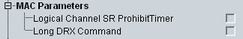

MAC UE Capabilities
This section indicates UE capabilities for the MAC layer.

MAC capabilities
UE supports the logical channel SR prohibit timer as specified in 3GPP TS 36.321.
Remote command:UE supports the long DRX command MAC control element as specified in 3GPP TS 36.321.
Remote command: